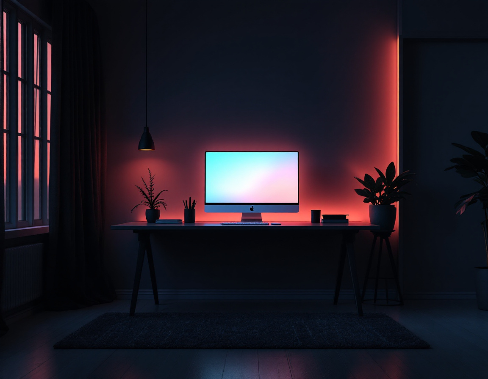
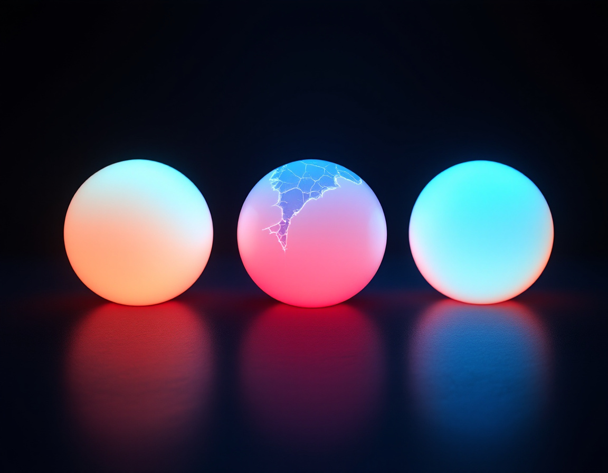

Ассистентный подход:
один вход, один выход
Сегодня у каждого появится свой сотрудник, который знает вашу работу и не забывает её.
Промпт вы писать научились.
А дальше каждый раз с нуля
Три слова, которые сегодня наполним
Процесс
То, что вы делаете руками каждую неделю. Сначала найдём его, потому что обычно человек сам не знает, что у него повторяется.
Ассистент
Тот же промпт, только сохранённый и положенный в папку под одну задачу. Не надо объяснять заново.
Результат
Один и тот же формат каждый раз. Без «а сделай таблицей» и без напоминаний.

Забираем с собой всё,
что уже накопили
Три причины, и ни одна из них
не «он лучше»
Переносим досье за пару минут
У вас уже всё есть.
Просто оно выключено
Пока связка выключена, Gemini их просто не видит.
Серый значит выключено. Синий значит работает
Адрес: gemini.google.com/apps
Экран называется «Подключенные приложения».
В разделе «От Google» находим блок «Google Workspace». Справа от него переключатель.
Один переключатель включает сразу всю связку: Gmail, Календарь, Keep, Диск, Документы, Задачи.
Он начинает видеть вашу почту, ваш диск и ваши документы.
Документ, положенный ассистенту в базу знаний прямо с Диска, обновляется сам. Поправили файл, ассистент уже знает новое.
С загруженным файлом так не работает, его надо перезаливать. Это одна из причин, почему связка нужна.
Включите связку прямо сейчас
Один вход,
один выход
Без напоминаний, без «а сделай таблицей», без объяснений заново.
Разовый промпт против сохранённого
Открыли чат. Объяснили, кто вы и чем занимаетесь. Написали задачу по формуле. Получили хороший ответ.
Закрыли чат.
Завтра та же задача. Открыли новый чат. Объяснили заново. Написали заново. И так каждый раз.
Один раз собрали инструкцию. Сохранили под именем. Положили в папку.
Дальше просто кидаете туда данные.
Он уже знает, кто он, что делает, в каком виде отдаёт результат и чего делать нельзя. Объяснять нечего.
У него один вход и один выход
Вход: договор от контрагента
Выход: протокол разногласий с готовыми формулировками
База знаний ему почти не нужна: он работает с тем, что вы принесли
Вход: карта партнёра и реквизиты
Выход: готовый договор
А вот ему база нужна обязательно: ваши шаблоны договоров, по которым он собирает новый
Десять пар «вход, выход»
Тогда это второй тип. И выход у него тоже один
Вы приносите материал, он отдаёт готовый документ. Договор в протокол, выгрузка в сводку, встреча в протокол.
Выход: конкретный артефакт, который вы отправляете дальше.
Вы задаёте вопрос по теме, которую покрывает его база: регламенты, условия, инструкции.
Выход: ответ строго по документам, со ссылкой на файл, и честное «этого у меня нет».
Правило простое: повторяется или нет
Задача возвращается каждую неделю.
Формат результата всегда один.
Вы объясняете одно и то же по кругу.
Ошибка стоит денег или репутации.
Работу будет делать не только вы.
Задача разовая.
Каждый раз нужен разный формат.
Вы ещё сами не поняли, чего хотите.
Это разговор, а не производство.
Проще спросить, чем описывать правила.
Сначала надо понять,
что вообще повторяется
И это нормально. Пусть он сам их найдёт.
Он уже знает вашу работу. Пусть разложит её на куски
Не пять, не три. Один
Найдите свои процессы и выберите один
Собираем ассистента
из этого процесса
Шесть шагов, полчаса. Инструкцию руками писать не будем: это долго и получается хуже.
Восемь шагов. Первую инструкцию не берём никогда
Десять полей, и процесс перестаёт быть «ну я там отвечаю клиентам»
Процесс он уже назвал.
Как вы его делаете, не знает
Что он знает из карточки
что за процесс, как часто, что на входе, что на выходе
Чего не знает
по каким шагам вы идёте, где спотыкаетесь, чего не делаете никогда
Один промпт, и черновик готов
Теперь пусть раскритикует сам себя
И только теперь берём инструкцию в работу
Восемь пунктов, тридцать секунд
Левое меню, Gem-боты, кнопка «Создать». Вот весь экран
Название
по задаче, а не по красоте: «Ответ клиенту по цене»
Описание
одна строка, зачем он. Это для вас, чтобы вспомнить через месяц
Инструкции
сюда вставляете то, что он собрал на шаге 2. Под полем волшебная палочка, она дописывает сама
Инструмент по умолчанию
оставляем «Не выбран». Это для картинок, музыки и Canvas, нам сегодня не нужно
База знаний
файлы. Про них следующий блок, пока пусто
Галочка про источники
не трогаем совсем. Почему, скажу через две минуты
Экран поделён надвое, и это лучшее, что в нём есть
Правите словами прямо в поле. Не понравилось, стёрли, дописали, поменяли формулировку.
Даёте живую задачу и видите ответ. Ещё до того, как нажали «Сохранить».
Соберите своего ассистента целиком, до чистовика
Чтобы он отвечал
по вашим файлам
Пусть он сам напишет, какие файлы ему нужны

Один и тот же вопрос
до файлов и после
Отвечает разумно и обтекаемо. Общие формулировки, средние цифры, «обычно в таких случаях».
Звучит уверенно, а проверить нечем.
Отвечает вашими условиями и вашими цифрами. И показывает, из какого файла взял каждый кусок.
Разницу видно с первой строки.
Есть ссылка на файл, значит читал.
Нет ссылки, значит сочинил

Три теста,
и ему можно доверять
Обычная, сложная и без данных
Обычная задача
Данные полные, всё как всегда. Он должен быстро отдать результат ровно в том формате, который вы описали. Формат поехал, значит инструкция расплывчатая.
Сложная задача
Внутри противоречие или риск. Он должен это заметить и подсветить, а не проехать мимо. Не заметил, добавьте в инструкцию, на что смотреть.
Без данных
Спрашиваете то, чего он знать не может. Он должен сказать «не знаю» или задать вопрос. Уверенно выдумал, значит будет выдумывать и в работе.
Прогоните своего по трём тестам
Одного вы собрали сами.
Остальных просто берите
Двенадцать готовых, под вашу работу
Юрист по договорам
Договор на входе, протокол разногласий на выходе
Переговорщик
Готовит трудный разговор и играет за вторую сторону
Ответ клиенту
Три варианта разной жёсткости, в вашем тоне
Работа с «дорого»
Разбирает возражение и держит цену
Сводка по выгрузке
Цифры, отклонения, вывод на пять строк
Протокол планёрки
Задачи, сроки, ответственные, что зависло
Подбор по резюме
Сравнение по критериям и вопросы к кандидату
Досье на компанию
Перед встречей, со ссылками на источники
Разбор переписки
Договорённости, что просрочено, черновик ответа
Документ по-человечески
Что написано и где вам невыгодно
Заявки и обращения
Разбирает поток и раскладывает по правилам
Разбор недели
Что сдвинулось, куда ушло время, план на следующую
Юрист:
договор внутрь, протокол разногласий наружу
Переговорщик:
трудный разговор до того, как он случился
Дома он окупается быстрее, чем на работе
Фитнес-тренер
План, который выдержите, без марафонов
Шеф-повар
Меню на неделю и список покупок
Личный бюджет
Куда уходит зарплата и как собрать подушку
Тревел-планировщик
Маршрут, бюджет, что бронировать первым
Репетитор языка
Разговор каждый день по пятнадцать минут
Помощник родителя
Домашка, кружки, конфликты, без нотаций
Объясняй, пока не пойму
Любая тема до полного понимания
Трудный разговор
С близкими, с тренировкой перед
Собеседник вечером
Разгрузить голову и увидеть день со стороны
Подарки без паники
Под человека, а не общие списки
Крупная покупка
Где переплачивают и что спросить
Координатор ремонта
Этапы, смета, контроль подрядчика
Планировщик выходных
Так, чтобы в понедельник были силы
Разбор подписок
Мелкие списания, которые съедают месяц
Тренажёр выступлений
Прогнать речь и услышать, где вас потеряли
Соберите себе несколько разных
Карта заполнена
Три дня, три ассистента
Среда
Собрать базу знаний по списку, который он вам написал, и загрузить её своему ассистенту. Проверить, что ответы поменялись.
Четверг
Поставить юриста и прогнать на настоящем договоре. Плюс любой второй готовый из двенадцати.
Пятница
Собрать второго своего ассистента, уже без подсказок. Тот процесс, который был запасным.
Ассистент выходит
из чата в вашу работу
Дальше подключим Блокноты и ваше облако, и он начнёт работать с тем, что у вас уже лежит.